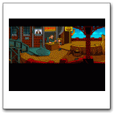
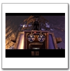

Current Articles

The Bizarre Adevntures
The Bizarre adventure of Woodruff and Schnibble(also known as Woodruff and the Schnibble of Azmurith) is among the last adventure games..

Adventure game puzzles: unlocking the secrets of puzzle design
For a lot of games, you can figure out most of what you need to know about them from simply looking at an in-game...